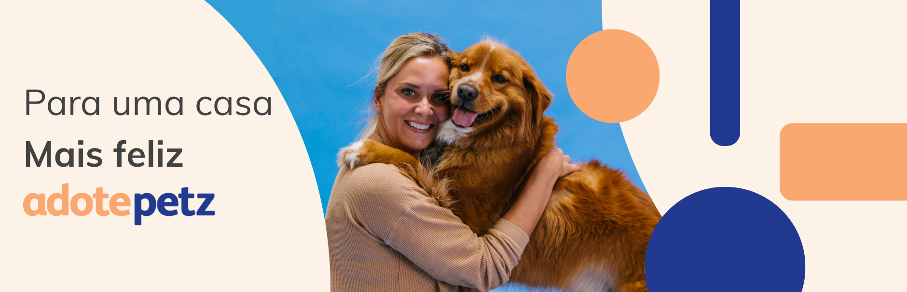
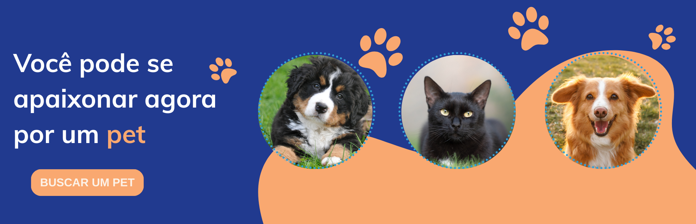
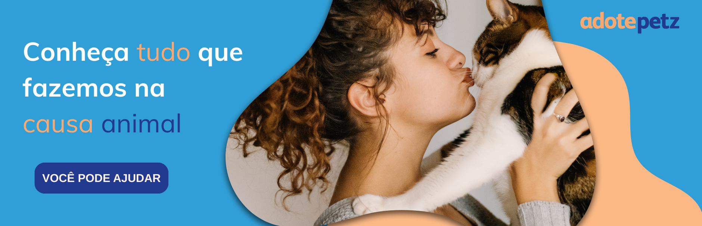

O Programa Adote Petz já
ajudou
0 pets a
encontrarem um lar.



O Programa Adote Petz já
ajudou
0 pets a
encontrarem um lar.
Nós fazemos a conexão entre quem deseja adotar um pet com uma rede de mais de 140 ONGs e protetores parceiros. Funciona assim: a Petz disponibiliza
espaços especialmente dedicados para a adoção no centro de suas lojas e as ONGs/protetores parceiros ficam responsáveis pelo processo e entrevista com os br
potenciais adotantes. Juntos somos mais fortes!
Visite uma loja Petz com espaço de adoção e conheça pets de ONGs parceiras para encontrar seu novo amigo. Veja as lojas aqui.
Faça a entrevista na hora com um voluntário da ONG. Se não houver um presente, preencha o formulário e aguarde o contato em até 48h. aqui.
A ONG/protetor analisará seu perfil e o do pet. Se aprovado, você recebe a resposta na hora (em entrevistas presenciais) ou por telefone/e-mail (via formulário online). aqui.
Se aprovado na hora, você já pode levar seu pet para casa! Caso tenha enviado o formulário online, aguarde o contato e, após a aprovação, retire seu pet na loja. aqui.
*Algumas ONGs e protetores parceiros podem solicitar a cobrança de uma taxa no momento da adoção, com a finalidade de auxílio de custos. Esta cobrança / recebimento é realizada diretamente entre o adotante e ONG/protetor parceiro.
Ainda ficou com dúvidas e quer saber melhor sobre as formas de adoção? Basta clicar aqui!
ADOÇÃO
Adotar um pet é um grande ato de amor pelos animais. Afinal, com a adoção, é possível tirar ...

ADOÇÃO
Uma cena muito triste e, infelizmente, comum, é se deparar com animais ...

ADOÇÃO
Quem é gateiro de carteirinha sabe que ter um gato em casa ...

ADOÇÃO
Quando pensamos em adoção, muito se fala sobre as vantagens de ter um cachorro ...
Na área de Perguntas Frequentes, você encontra as
respostas para as principais dúvidas sobre adoção.
Caso não encontre o que procura, entre em contato
conosco que teremos o maior prazer em ajudar você.